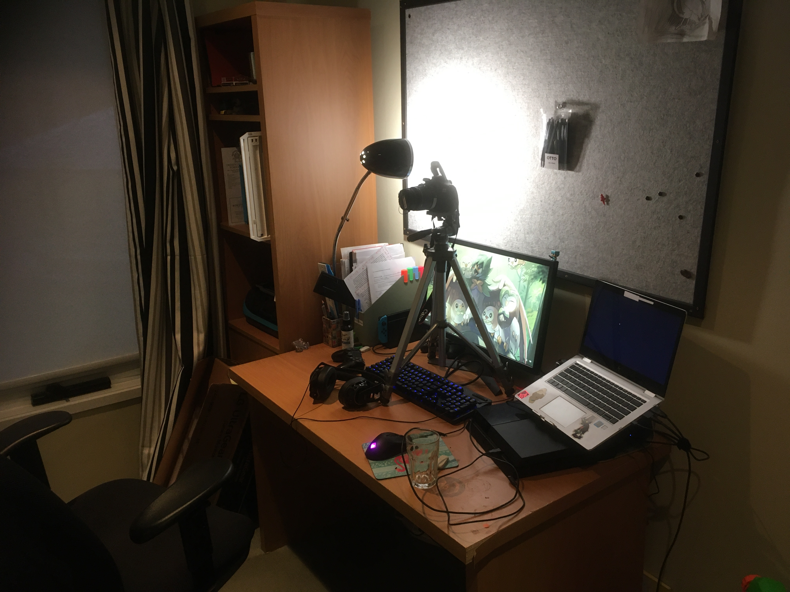
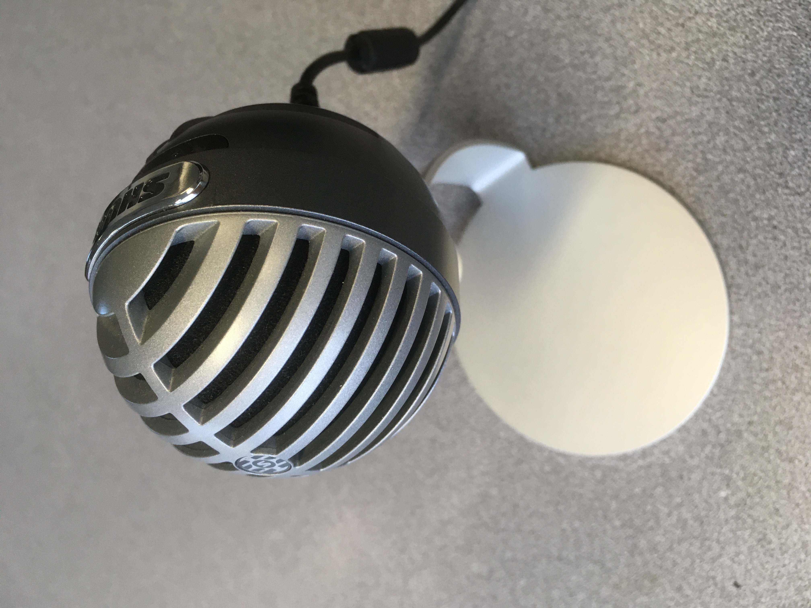

Canon EOS
Best camera that was available to me. It contains a 16GB SD card and has a tripod. Lighting is mainly room lights with a desk lamp shining on a wall behind camera.
PC Set Up
The way I make my product. It consists of my Lenovo pc, a LG monitor, a usb splitter, a Plantronics RIG 500 headset, a mouse, a HDMI cable, a sea gate hard drive, a charger and a wifi connection. The pc will be where I edit the final product / get any other clips I can’t record via Youtube. The software I will primary use to edit my product will be Premier Pro. It’s a industry grade tool that has numinous tutorials. I also use photoshop inorder to edit specific photo's I will use in my production
PS4
The main way I will be recording my clips. Due to my limited budget, I was not able to purchases a desktop that would be able to run the video games I wish to record. I also already had a lot of the games on the console so while it would be more convenient to only use a pc, using a ps4 will suffice. It also has a in built screen recording system, so I won’t need to install more software. I will need a controller, a copy of Skyrim, a copy of GTA 5, Dark Souls 1 and 3.
Podcaster
The best desk recording mic available to me. It both looks visually appealing and has decent quality.